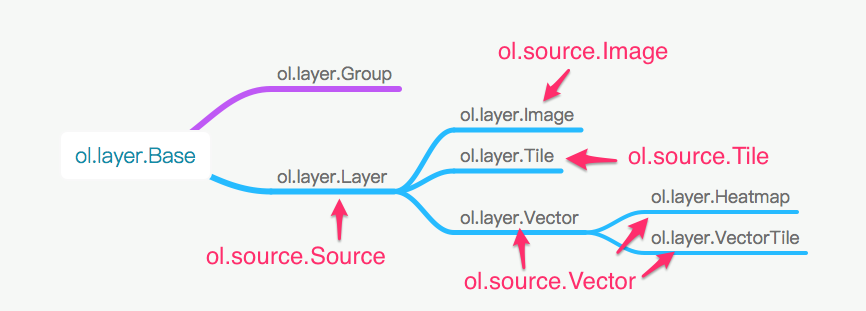
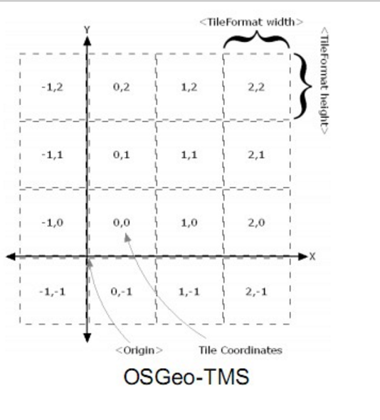
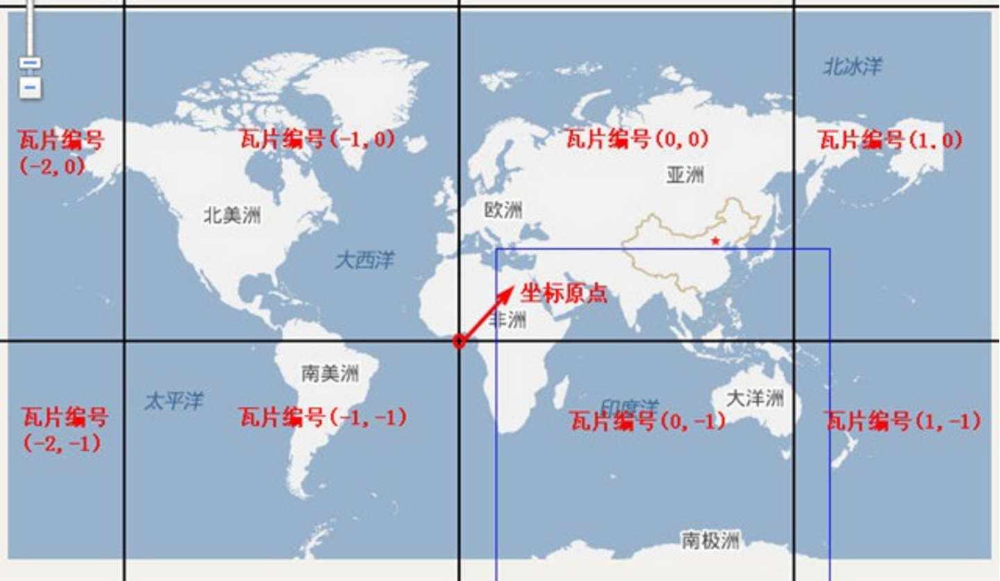

Source和Layer
在前面的例子中，已经对Source和Layer有所了解了。比如我们加载了Open Street Map的地图。然而世界上的地图并不只有Open Street Map，还有很多其他的地图，比如Google地图，天地图，高德地图，百度地图等。如果OpenLayers支持的地图来源越多，就会越适用，越强大。除了加载基本的地图之外，GIS还需要加载很多其他的信息，比如街道名称，商店名称，公交站点，道路等等。那么在OpenLayers 3中，具体该如何把这些添加在地图上呢？
首先需要明白的一点是，Source和Layer是一对一的关系，有一个Source，必然需要一个Layer，然后把这个Layer添加到Map上，就可以显示出来了。通过官网的API搜索ol.source可以发现有很多不同的Source，但归纳起来共三种：ol.source.Tile，ol.source.Image和ol.source.Vector。
ol.source.Tile对应的是瓦片数据源，现在网页地图服务中，绝大多数都是使用的瓦片地图，而OpenLayers 3作为一个WebGIS引擎，理所当然应该支持瓦片。ol.source.Image对应的是一整张图，而不像瓦片那样很多张图，从而无需切片，也可以加载一些地图，适用于一些小场景地图。ol.source.Vector对应的是矢量地图源，点，线，面等等常用的地图元素(Feature)，就囊括到这里面了。这样看来，只要这两种Source就可以搞定80%的需求了。
从复杂度来分析，ol.source.Image和ol.source.Vector都不复杂，其数据格式和来源方式都简单。而ol.source.Tile则不一样，由于一些历史问题，多个服务提供商，多种标准等诸多原因，导致要支持世界上大多数的瓦片数据源，就需要针对这些差异提供不同的Tile数据源支持。在更进一步了解之前，我们先来看一下OpenLayers 3现在支持的Source具体有哪些：
上图中的类是按照继承关系，从左向右展开的，左边的为父类，右边的为子类。在使用时，一般来说，都是直接使用叶子节点上的类，基本就可以完成需求。父类需要自己进一步扩展或者处理才能有效使用的。
我们先了解最为复杂的ol.source.Tile，其叶子节点类有很多，大致可以分为几类：
- 在线服务的
Source，包括ol.source.BingMaps(使用的是微软提供的Bing在线地图数据)，ol.source.MapQuest(使用的是MapQuest提供的在线地图数据)(注: 由于MapQuest开始收费，ol v3.17.0就移除了ol.source.MapQuest)，ol.source.OSM(使用的是Open Street Map提供的在线地图数据)，ol.source.Stamen(使用的是Stamen提供的在线地图数据)。没有自己的地图服务器的情况下，可直接使用它们，加载地图底图。 - 支持协议标准的
Source，包括ol.source.TileArcGISRest，ol.source.TileWMS，ol.source.WMTS，ol.source.UTFGrid，ol.source.TileJSON。如果要使用它们，首先你得先学习对应的协议，之后必须找到支持这些协议的服务器来提供数据源，这些服务器可以是地图服务提供商提供的，也可以是自己搭建的服务器，关键是得支持这些协议。 - ol.source.XYZ，这个需要单独提一下，因为是可以直接使用的，而且现在很多地图服务（在线的，或者自己搭建的服务器）都支持xyz方式的请求。国内在线的地图服务，高德，天地图等，都可以通过这种方式加载，本地离线瓦片地图也可以，用途广泛，且简单易学，需要掌握。
ol.source.Image虽然有几种不同的子类，但大多比较简单，因为不牵涉到过多的协议和服务器提供商。而ol.source.Vector就更加的简单了，但有时候其唯一的子类ol.source.Cluster在处理大量的Feature时，我们可能需要使用。
在大概了解了整个Source之后，紧接着该介绍它的搭档Layer了，同样的，我们还是先从OpenLayers 3现有的Layer类图大致了解一下：

为了便于了解和使用，图中标注了每一个Layer对应的Source。通过上图可以看到Layer相对于Source而言，真是太简单了。
对于初学者而言，如何选择和应用不同的Source和Layer是一个非常迷惑和困难的问题。为此，本章将围绕着Source和Layer展开，为大家解决这个问题。
加载瓦片地图
瓦片地图源于一种大地图解决方案，针对一整块非常大的地图进行切片，分成很多相同大小的小块地图，在用户访问的时候，再一块一块小地图加载，拼接在一起，从而还原成一整块大的地图。这样做的优点在于，用户在同一时间，同一个可见视图内，只能看到地图的一部分，而不是全部。如果一次加载整个大地图，会导致加载很慢，且不可用的问题。这对于在线服务来说，是非常致命的。所以几乎所有的在线网页地图服务，都使用的是瓦片地图。自然加载瓦片地图成了必不可少的功能，也是必须要掌握的，为此本节将重点介绍如何选择和加载瓦片地图，不用担心，都会结合具体的实例来讲解。
最简单的加载在线地图
本小节所介绍的这些在线地图，加载起来会非常简单，因为OpenLayers 3已经做了很好的封装，对于开发者而言，无须做过多的编码，即可直接使用。主要包括开源的Open Street Map，微软的Bing地图，Map Quest地图(注: 由于MapQuest开始收费，ol v3.17.0就移除了ol.source.MapQuest)，Stamen地图。
OpenStreetMap地图
Bing地图
Stamen地图
MapQuest地图
1 | <div id="map" style="width: 100%"></div> |
代码很简单，因为OpenLayers 3对这几个在线服务都做了很好的封装，只用简单的配置一下
Source的构造参数就可以了。此处并没有列出每一个类的所有构造参数，但可以通过API文档查询了解。上面这个地图涉及到多个地图源，如果都放在地图上，就涉及到图层管理，这一部分的知识将在后续章节图层叠加及管理有更详细的介绍。
# 万能瓦片地图加载秘籍
其实加载瓦片地图基本是大同小异，你可能会觉得很惊讶，因为网上在线的地图服务，看起都不一样，本节即将为你解开这层神秘的面纱。在前面已基本介绍了瓦片地图的解决方案和作用，此处再用一张图来直观地认识一下瓦片结构：

从上图可知，大家常用的瓦片地图是一个三维的概念，我们通常使用xyz这样的坐标来精确定位一张瓦片。通常z用于表示地图层级，而xy表示某个层级内的瓦片平面，x为横纵坐标，y为纵轴坐标，类似于数学上常见的笛卡尔坐标系。在这个瓦片平面上的每一个瓦片在横轴和纵轴上都有对应的坐标：x和y。
## 加载简单的瓦片地图
虽然现在大多数网页地图都使用的是瓦片地图，但还是有必要先介绍一下如何识别它。在浏览器中打开任意一个在线的网页地图，然后打开浏览器的开发者工具，再随意拖动，放大缩小地图。之后在开发者工具里查看新发起的请求，是否有一些图片请求，查看请求返回的图片，是否为正在浏览的地图的一部分，如果是，则基本为瓦片地图。下面以百度地图为例，说明一下在线瓦片地图请求信息：

在请求的url中，我们可以很明显地看到xyz这三个参数，这进一步说明了百度地图就是用了瓦片地图。如果你多分析一下现有的在线网页地图，基本都是瓦片地图。正因为如此，OpenLayers 3提供了
ol.source.XYZ这种通用的Source来适应广大的在线瓦片地图数据源，具备很好的适用性。通常情况下，开发者想要加载不同的在线瓦片地图源，则只需要更改ol.source.XYZ的构造参数中url就可以了。 比如我们就可以不用ol.source.OSM，而用ol.source.XYZ来加载Open Street Map地图，结果一样：1 | <body> |
除了Open Street Map可以这样加载外，还有很多其他的在线瓦片地图源也可以，比如高德地图：
1 | // 高德地图层 |
比如Yahoo地图：
1 | // yahoo地图层 |
大同小异，非常简单。上面的三个例子，只有Yahoo地图的代码有点不一样：多了
tileSize参数的设置。默认情况下，tileSize为256，这也是现在绝大多数瓦片采用的大小。但Yahoo地图使用的是512，所以我们需要显示指定。## 瓦片地图之百度地图
通过上面的示例我们已经发现，其实可以非常轻松地加载多种不同来源的在线瓦片地图。但遗憾地是，上面这种简单方法并不适用于所有的在线瓦片地图，总有一些是特殊的，比如百度地图，上面这种方式就不生效了。此时，我们需要回过头来思考一下瓦片地图加载的整个过程：瓦片地图加载的关键在于找对瓦片，但要找对瓦片，就得知道瓦片的坐标，而坐标又需要明确的坐标系。我们在坐标里说过，任何坐标都得有坐标系才有意义。在OpenLayers 3中，默认使用的瓦片地图的坐标系是如何定义的？经分析可知，OpenLayers 3的瓦片坐标系的原点在左上角，向上为y轴正方向，向右为x轴正方向。具体到地图上来讲，地球经过投影，投影到一个平面上，平面最左边对应地球最西边，平面最上边对应地球最北边。原点就处于整个平面的左上角，即地球的西北角，从北向南为y轴负方向，从西向东为x轴正方向。理解这一点非常重要，因为并不是所有在线的瓦片地图都是采用这样的坐标系。用OpenLayers 3加载它们的时候，如果坐标系不同，计算出来的瓦片地址就获取不到对应的瓦片，为解决这个问题，我们必须要先对瓦片坐标进行转换。那么，具体该怎么实现转换？最详细明了的方式还是看实例，下面我们看一下加载百度地图一种实现方式：
代码如下：
1 | <div id="baiduMap" style="width: 100%"></div> |
和前面几个加载在线瓦片地图的例子不一样的地方在于，我们没有设置
url，而是设置了tileUrlFunction，这是一个获取瓦片url的函数，如果自定义这个函数，就可以实现不同坐标系之间的转换，从而返回在线地图服务对应瓦片的url。通过代码可以看到，函数入参是一个瓦片坐标，然后进行一系列的转换，得到百度在线地图的瓦片地址。效果参见上方地图，不妨拖动、缩放试试，拼接无缝，并没有什么问题。tileUrlFunction这个自定义函数的代码实现有可能看不懂，虽然知道在进行坐标转换，但并不知道为什么要这样实现。为了彻底弄明白代码，我们必须得把之前遗漏的一个很重要环节补上：弄明白待加载的在线瓦片地图的坐标系。对百度在线瓦片坐标系进行简单分析发现，它是以某一个位置为原点，向右为x正方向，向上为y正方向的坐标系，进一步分析发现，原点应该在中心位置，为此，我们假设百度地图是以经纬度[0,0]为原点，在此基础上编写函数tileUrlFunction的实现。halfTileNum表示的是在当前缩放层级之下，总的瓦片个数的一半，意味着它就是中心位置。对于baiduX小于0的情况，百度使用了M来表示负号，所以要特殊处理一下。想必这下应该更加理解代码实现了。不同的在线瓦片地图的转换代码可能不同，需要根据对应的坐标系来确定。但上面这个地图并不完美，因为我们设定的地图中心为成都，然而实际上显示的地图中心并不在成都。虽然无缝拼接，但位置偏差有点远。由此基本可以排除坐标转换的问题，看起来应该是OpenLayers 3的分辨率和百度在线瓦片地图使用的分辨率对不上。经过分析发现，确实如此，在网上也有很多分析文章可以查阅。那么我们是否可以重新定义分辨率呢？ 答案是肯定的，我们可以使用
ol.source.XYZ的父类来解决问题。## 重新定义OpenLayers 3的瓦片坐标系
ol.source.TileImage作为ol.source.XYZ的父类，除了可以转换坐标之外，还具备更加强大的功能，修改分辨率。下面我们使用它来加载百度地图，这次是正确的：对应的代码：
1 | <div id="baiduMap2" style="width: 100%"></div> |
这个代码同上面的代码相比，引入了
ol.tilegrid.TileGrid，由名字可见，这是定义瓦片网格，其实就是瓦片坐标系，构造时需要设定原点，紧接着设置分辨率，其作用在于设定每一地图层级的分辨率。我们是否遗漏了坐标系的正向和负向的设定？默认情况下，从左向右为x正方向，从下向上为y轴正方向。这和我们数学上通常定义的笛卡尔坐标系是一样的，这一点需要大家记住。如代码所示，就可以重新定义OpenLayers 3的瓦片地图坐标系，这种方式的代码比上一种方式更加的可读和简洁。 如果用通用的方法解决不了，请别忘记还有这一强大灵活的处理方式。## 分析瓦片地图坐标系
如何分析不同在线瓦片地图的坐标系呢？非常重要的一点是，先从特例出发，找简单的情况分析，比如选择z为2或者3进行分析，这种情况下，瓦片的数量比较少，可以查看整个地球范围内的地图的瓦片请求，注意分析其请求的
url参数。上述的所有地图都可以以这样的方式入手来分析，包括百度地图，可以自行尝试该方法。如果你有更好的方法，愿意的话，请给大家一起分享一下。## 解密瓦片url
瓦片的url解析对于想直接使用在线瓦片服务的开发者而言，是一项经常要做的事。根据难度，大致可以分为三种情况：
第一种是最简单的，请求瓦片的
url明确有xyz参数，比如高德地图和百度地图。
第二种稍微难一点，xyz作为路径直接存在于url里面，没有明确的参数表明哪些是xyz，比如Open Street Map和Yahoo地图，这种情况下，地图服务器接收到请求后，就直接在服务器按照这个路径获取图片，按照这个逻辑，一般第一个参数表示是z，第二个参数为x，第三个参数为y。要想确认是否真是这样，可以写一个小程序来验证一下，如果还有问题，建议按照上面分析地图坐标系中的方法，从z比较小的情况入手来分析x，y，z的位置。第三种则最难，地图服务提供商为了防止大家直接非法使用瓦片地图，对瓦片的url进行了加密，比如现在的微软Bing中文地图和Google地图，这种情况下只有知道如何解密才能使用。
## 加载微软Bing中文地图
前面两种url的实例已经有了，此处分享一下第三种情况的url解密，以微软Bing中文地图为例：

图中显示的瓦片地图请求的url，没有明显的xyz参数，最有可能的存放xyz参数的地方在于url前面那一串数字，真实情况确实是这样的，经过分析和解码，最终实现了加载Bing中文地图：
代码如下：
1 | <div id="bingMap" style="width: 100%"></div> |
需要注意的是地图数据是非常昂贵的，如果使用某一个在线地图服务，请先核实对方的版权和数据使用申明，不要侵犯对方的权益，按照要求合法使用地图。几乎所有的在线地图服务都提供了响应的服务接口，强烈建议在商用项目中使用这些接口。对于这些接口的使用，服务商都有详细的说明，在此不累述。
# google地图加载
有许多人都在问google地图加载的问题，因为地图url是加密的，通过分析url，可以采用下面的方式来加载：
代码如下：
1 | <div id="googleMap" style="width: 100%"></div> |
至此，关于通用瓦片地图加载的秘籍就介绍完毕，希望大家都掌握了。
# 加载离线瓦片地图
其实离线瓦片地图和在线瓦片地图是一样的原理，都是瓦片，只是离线瓦片地图的存取方式，是由开发者自己来定义的，而在线瓦片地图则不一定。 在不理解原理的情况下，很多人拥有了离线瓦片，却不知道如何加载，所以这里单独列出一个小节来讲解。
在很早之前，我在github上放出了一个加载离线瓦片的地图demo，现在还是使用这个demo来讲解：
只是演示效果，所以瓦片就只有1张。 如果放大或者缩小，就可能看不到地图瓦片了。 先看代码：
1 | <div id="map" style="width: 100%"></div> |
代码很简单，就不再做任何说明，参照注释。 这个例子中唯一的瓦片图片相对路径是：
offlineMapTiles/4/12/6.png。 在开发时，会考虑这样一个问题： 是先在代码里面写url，还是先在本地放好瓦片地图？ 我建议瓦片地图数据优先，而且很多瓦片地图都是工具下载的，量大，如果需要修改目录结构，会比较费事。相对的，修改url的代码明显就要简单很多。url必须根据瓦片地图存放路径来编写，比如这个例子里面，4表示的是层级，12表示的是x，6表示的是y，我们的url参数就写成： {z}/{x}/{y}.png。 如果瓦片地图都放在一个目录下，采用z-x-y.png的方式命名，那么url参数就得写成： {z}-{x}-{y}.png。在上一节中，我们提到过，瓦片地图最主要的是要考虑瓦片的坐标系和分辨率，对于离线瓦片地图也同样成立。 在使用之前，你必须要了解清楚这一点，方能正确加载和使用。
## 常见问题
> Q: 为什么本地有离线瓦片地图，但在网页中没有显示地图？
> A: 存在多种原因可能导致这个问题的出现，你需要逐一检查：
> 打开开发者工具，检查一下代码是否有错误提示。
> 检查一下HTTP请求的瓦片地址是否正确。
> 检查一下离线瓦片地图，是否包含了当前地图显示层级的瓦片地图。
> 检查一下离线瓦片地图的整个区域，是否包含了当前地图设置的中心点。
> 检查一下地图使用的坐标系，是否正确。 OpenLayers 3默认使用的是mercator，而不是wgs84。所以如果中心点想设置为经度30度，纬度30度，就需要显示设置
projection: 'EPSG:4326'，或者使用ol.proj.transform([30, 30], 'EPSG:4326', 'EPSG:3857')进行转换。同一个坐标，不同的坐标系，位置可能截然不同。> Q: 为什么加载的地图有瓦片错位，拼接不上？
> A: 检查一下离线瓦片地图的坐标系，是否和OpenLayers 3默认的坐标系不一致，如果不一致，请按照上一小节的处理方式处理。
# 静态地图及应用
此处说的静态地图指没有经过地理投影什么的普通地图，比如一些规划图，室内建筑图，平面示意图等等，这些图一般都不会很大，但常用于一些演示系统中。 会涉及到一些简单的定位，标注等。 OpenLayers 3也充分考虑到了这样的需求，提供了对应的
source类： ol.source.ImageStatic。 示例请看下面这个地图，显示的是成都熊猫基地的平面图：因为应用于OpenLayers 3中，所以地图可以放大缩小，具备相应的功能，对于演示而言，无疑加快了开发效率。 对应的代码如下：
1 | <div id="map" style="width: 100%"></div> |
代码中有详细注释，可帮助理解，要应用静态地图，需要注意设置图片在地图中占据的
extent。 如果没有这个设置，图片就不能和位置关联在一起，也就不能应用于OpenLayers 3中。 大家肯定非常关心extent的计算[center[0]- 550*1000/2, center[1]-344*1000/2, center[0]+550*1000/2, center[1]+344*1000/2]，为什么这样计算？ 这个地方我想让图片本身的大小和地理范围产生联系，图片的大小为550344像素，在此基础上同比放大1000倍，作地理范围。当然也可以不用放大，直接作为地理范围，只是这样需要放大地图到很高的层级才能看到它。 有了这样的映射关系后，图片能保持长宽比不变，从而不变形。 为什么引入center，除以2相关的计算？ 这是一个简单计算，目的在于设置图片显示在地图中心。把地图加载出来只是第一步，我们最重要的是在地图上定位，并处理相应的业务。比如我们希望在图片[390,145]像素位置添加一个活动图标表示这个地方有现场活动，就像下面这样：
看到地图上的小旗帜没有，它就是新加上去的活动图标。 那么我们是如何做到的呢：
1 | <div id="map2" style="width: 100%"></div> |
注释足够帮助大家理解代码意图，我想最关键的在于
activity这个feature的位置为什么要这样计算： [center[0]- 550*1000/2 + 390 * 1000, center[1]-344*1000/2 + (344 - 145) * 1000]。 如果翻译成下面这样，你可能会更容易理解：extentLeft+picX, extentTop+picY，此处的picX和picY显然是需要在图片像素位置的基础上放大1000倍，才能对应于地理位置。 [center[0]- 550*1000/2对应的就是extentLeft, center[1]-344*1000/2对应的是extentBottom，并不是extentTop，所以我们要做一个简单的计算(344 - 145) * 1000，而不是直接用145*1000。从图片的像素坐标转换为地图的地理坐标，关键在于通过像素大小，映射到一个地理的
extent，希望能理解这个过程。 在此基础上，就能充分应用OpenLayers 3的功能了。对于图片比较大的情况，可以自行切片，然后分片加载，从而拼成一整张地图，可按照上面的方法自行尝试，作为课后练习。
# 加载WMS服务地图
# 矢量地图
矢量图使用直线和曲线来描述图形，这些图形的元素是一些点、线、矩形、多边形、圆和弧线等等，它们都是通过数学公式计算获得的。由于矢量图形可通过公式计算获得，所以矢量图形文件体积一般较小。矢量图形最大的优点是无论放大、缩小或旋转等不会失真。在地图中存在着大量的应用，是地图数据中非常重要的组成部分。
为了便于存储，传递，使用，矢量地图会按照一定的格式来表达，比如常见的
GeoJSON，TopoJSON，GML，KML，ShapeFile等等。 除了最后一个ShapeFile，其他几个格式的矢量地图OpenLayers 3都支持，使用起来也是非常的简单，下面这个地图就加载了GeoJSON格式的矢量地图。代码非常简单：
1 | <div id="map" style="width: 100%"></div> |
注释对代码进行了很好的说明，但有两点需要进一步说明：
加载矢量图使用的
source是ol.source.Vector, layer是ol.layer.Vector，不要错误的使用。
加载代码之所以这么简单，是因为OpenLayers 3内置了对应矢量地图格式的解析类，比如ol.format.GeoJSON。 它们都位于包ol.format下面，可以在API官方文档中查询得到。 如果是shapefile这种不支持的，则需要自己解析。 解析后，矢量地图都会转换为对应于OpenLayers 3中的
feature。 所以，当加载完成后，可以通过source的getFeatures方法来获取所有的矢量图形。需要注意坐标系，因为
.geojson文档里用的是和当前地图用的不一样的坐标系。对于不同格式的矢量地图，会有相应的一些不同用法，下面就针对一些大家经常会遇到的问题，给出相应的实例，用以说明。
# 获取加载后的所有feature
这是一个很多人会遇到的问题，因为在加载矢量地图后，需要对矢量地图做一些简单的查询，分析等。 但是经常会遇到获取不到加载后的
feature的问题。 原因就在于获取的时机不对，因为矢量地图是异步加载的。 下面就看一下正确的获取所有feature的做法是什么：从图上可以看到，共有9个
feature， 在地图下方的统计数据也是9。 下面看看代码是如何实现的：1 | <div id="map" style="width: 100%"></div> |
对于其他格式的矢量地图加载也需要这样编写代码，才能正确获取到加载完成的所有
feature。# 坐标转换
坐标转换也是矢量地图经常会遇到的问题，比如当前地图用的是
EPSG:3857，但是矢量地图用的是EPSG:4326，这样就需要进行坐标转换。 由于OpenLayers 3为我们内置了地图格式解析器，那么自然只能依靠它来处理。 上一节中使用的.geojson文件内的坐标使用的是wgs84坐标，那么如果我们地图使用EPSG:3857，该怎么来加载？详细实现参见代码：
1 | <div id="map" style="width: 100%"></div> |
代码稍微麻烦了一点，是因为目前
ol.format.GeoJSON的构造参数不支持设定创建feature的坐标系，如果要支持也并不麻烦，期望后续官网能够改进。注意，该方法可以适用于其他几种矢量地图。
readFeatures这个方法在内置的几个解析类中都有。# 样式设置
对矢量元素进行样式设置，OpenLayers3 支持两种方式，一种是直接给
feature设置样式，一种是给layer设置样式。系统默认优先考虑feature的样式，如果没有，则使用layer的样式，还有一种情况是layer也没有设置样式，则会采用系统默认的样式。对于矢量地图而言，要想修改样式也只有这两种途径可选。比如之前例子中使用的
GeoJSON，如果要改变线条的颜色成下面这样，可以考虑在layer上设置样式：代码很简单：
1 | <div id="map" style="width: 100%"></div> |
如果要在
feature上设置样式，就必须先获取到所有加载的feature，然后依次设置，显然直接设置layer的样式，会在代码编写上更容易一些。## 自带样式的矢量地图修改样式
有些矢量地图数据自带样式，比如
KML格式的矢量地图，如果要修改样式，则相对比较麻烦。得分情况考虑：
一种是所有矢量地图都不使用自带的样式；* 一种是部分矢量地图不使用自带的样式。
对于第一种情况，则相对比较简单一些，只需要把
ol.format.KML的构造参数extractStyles设置为false即可，然后为layer设定自定义的样式。对于第二种情况，则相对麻烦一些，必须要读取加载的所有
feature，并进行过滤，对符合条件的feature重新设置样式。# 图层叠加及管理
分层管理是GIS渲染引擎及其他图形系统常用的策略，为业务的应用提高了较大的适用性。比如更换地图底图，不能影响在上地图上添加的一些标注。如果把地图底图和标注分开，放在不同的图层上，就很容易解决这个问题。
有了图层的概念，自然需要对图层进行控制，比如增删改查等，图层之间的顺序，图层可见度等等。这些都是大家经常会遇到的问题。下面先来看一下三个图层叠加的情况：
底图
圆
点
图层顺序：
底图最上
圆最上
点最上
上面这个地图示范了显示和隐藏的控制，以及图层顺序的控制。可以勾选上面的复选框和单选框试试。具体实现，参见下面的代码：1
2
3
4
5
6
7
8
9
10
11
12
13
14
15
16
17
18
19
20
21
22
23
24
25
26
27
28
29
30
31
32
33
34
35
36
37
38
39
40
41
42
43
44
45
46
47
48
49
50
51
52
53
54
55
56
57
58
59
60
61
62
63
64
65
66
67
68
69
70
71
72
73
74
75
76
77
78
79
80
81
82
83
84
85
86
87
88
89
90
91
92
93
94
95
96
97
98
99
100
101
102
103
104
105
106
107
108
109
110
111
112
113<div id="map" style="width: 100%"></div>
<div> 显示/隐藏：
<input type="checkbox" checked="checked" onclick="checkOsm(this);" />底图
<input type="checkbox" checked="checked" onclick="checkCircle(this);"/>圆
<input type="checkbox" checked="checked" onclick="checkPoint(this);"/>点
</div>
<div>
图层顺序：
<input name="seq" type="radio" value="" onclick="upOsm(this);" />底图最上
<input name="seq" type="radio" value="" checked="checked" onclick="upCircle(this);"/>圆最上
<input name="seq" type="radio" value="" onclick="upPoint(this);"/>点最上
</div>
<script>
// 创建3个图层
var osmLayer = new ol.layer.Tile({
source: new ol.source.OSM()
});
var pointLayer = new ol.layer.Vector({
source: new ol.source.Vector()
});
var circleLayer = new ol.layer.Vector({
source: new ol.source.Vector()
});
new ol.Map({
// 在地图上添加上面创建的三个图层，图层顺序自下而上，依次是osm，point，circle
layers: [osmLayer, pointLayer, circleLayer],
view: new ol.View({
center: [0, 0],
zoom: 2
}),
target: 'map'
});
// 添加点
var point = new ol.Feature({
geometry: new ol.geom.Point([0, 0])
});
point.setStyle(new ol.style.Style({
image: new ol.style.Circle({
radius: 1,
fill: new ol.style.Fill({
color: 'red'
}),
stroke: new ol.style.Stroke({
color: 'red',
size: 1
})
})
}));
pointLayer.getSource().addFeature(point);
// 添加圆
var circle = new ol.Feature({
geometry: new ol.geom.Point([0, 0])
});
circle.setStyle(new ol.style.Style({
image: new ol.style.Circle({
radius: 10,
stroke: new ol.style.Stroke({
color: 'blue',
size: 1
})
})
}));
circleLayer.getSource().addFeature(circle);
// 隐藏显示osm图层
function checkOsm(elem) {
osmLayer.setVisible(elem.checked);
}
// 隐藏显示point图层
function checkPoint(elem) {
pointLayer.setVisible(elem.checked);
}
// 隐藏显示circle图层
function checkCircle(elem) {
circleLayer.setVisible(elem.checked);
}
// 置顶osm图层到最上面
function upOsm (elem) {
if (elem.checked) {
osmLayer.setZIndex(3);
circleLayer.setZIndex(circleLayer.getZIndex()-1);
pointLayer.setZIndex(pointLayer.getZIndex()-1);
}
}
// 置顶circle图层到最上面
function upCircle (elem) {
if (elem.checked) {
circleLayer.setZIndex(3);
osmLayer.setZIndex(osmLayer.getZIndex()-1);
pointLayer.setZIndex(pointLayer.getZIndex()-1);
}
}
// 置顶point图层到最上面
function upPoint(elem) {
if (elem.checked) {
pointLayer.setZIndex(3);
osmLayer.setZIndex(osmLayer.getZIndex()-1);
circleLayer.setZIndex(circleLayer.getZIndex()-1);
}
}
</script>
简而言之，就是可以利用方法setVisible和setZIndex来控制图层，满足80%的这种需求。 除此之外，大家也可以使用很早之前使用的一种方式来实现管理，即删除/添加图层，参见最简单的加载在线地图。
openlayers3瓦片加载的源码浅析与小结
–感谢作者：老羽 (QQ：274103592, 邮箱：michael.zy@163.com, 简书：老羽 )
一、类图与逻辑

上图中列了关于瓦片图层加载相关的重要方法。
- Map对象初始化时根据options.renderer创建ol.renderer.Map的实例，默认是ol.renderer.canvas.Map；
- ol.render.canvas.Map实现了抽象方法createLayerRenderer，这是一个简单工厂，根据不同的图层创建对应的ol.renderer.Layer。其中ol.layer.Tile对应的就是ol.renderer.canvas.TileLayer；
- ol.renderer.canvas.TileLayer.prepareFrame调用source对应的
TileGrid.getTileRangeForExtentAndResolution获取可视范围内的瓦片范围，并循环遍历加载瓦片； - TileGrid在初始化时就计算出了对应layer的所有瓦片范围：
- calculateTileRanges-》循环遍历resolutions，调用
getTileRangeForExtentAndZ，根据extent计算瓦片范围； - getTileRangeForExtentAndResolution计算瓦片的范围：
- calculateTileRanges-》循环遍历resolutions，调用
1 | ol.tilegrid.TileGrid.prototype.getTileRangeForExtentAndResolution = function( |
二、各种瓦片加载的小结
通过上述分析后，应该能较好的理解瓦片的坐标是如何计算的，当应用到不同的地图瓦片加载时就可以得心应手。以下通过不同的几种类型继续说明瓦片计算的方式：
1、TMS瓦片加载
先看看TMS瓦片的规则，origin在左下角，X轴从左至右递增，Y轴从下往上递增（先计算左下角，然后计算右上角）。

而TileGrid设置origin为ol.extent.getBottomLeft(extent)后，规则也是从左下角到右上角，X轴从左至右递增，Y轴从下往上递增，与TMS规则是完全一致的，参考代码与参考效果如下：
1 | var resolutions = []; |

假如上面代码中，我想只显示深圳地区的瓦片，其余的瓦片不显示，这种场景是很普遍的，那么代码调整如下：
1 | var tilegrid = new ol.tilegrid.TileGrid({ |
2、WMTS瓦片加载
WMTS规则如下，origin在左上角，X轴从左至右递增，Y轴是从上往下递增（先计算左上角，然后计算右下角）

那么将tileGrid设置origin为ol.extent.getTopLeft(projectionExtent), 但是TileGrid始终都是先计算左下角的瓦片坐标，然后计算右上角的瓦片坐标，因此Y轴是相反的。那么修改Y轴坐标就可以得到正确值：
1 | var tilegrid = new ol.tilegrid.TileGrid({ |
3、百度地图瓦片加载
百度瓦片片规则如下：Origin在[0,0]，X轴从左至右递增，Y轴从下往上递增（从左下角到右上角）。

从百度的瓦片规则看出来，与TileGrid的规则是完全一致，将origin设置为[0,0]即可。参考代码如下：1
2
3
4
5
6
7
8
9
10
11
12
13
14
15
16
17
18
19
20
21
22
23
24
25
26 var tilegrid = new ol.tilegrid.TileGrid({
origin: [0, 0],
resolutions: resolutions,
extent: extent,//projectionExtent,
tileSize: [256, 256],
});
var tilesource = new ol.source.TileImage({
projection: projection,
tileGrid: tilegrid,
tileUrlFunction: function (xyz, obj1, obj2) {
if (!xyz) {
return "";
}
var z = xyz[0]+ 11; // 从第11级开始加载；深圳地区；
var x = xyz[1];
var y = xyz[2];
if (x < 0) {
x = "M" + (-x);
}
if (y < 0) {
y = "M" + (-y);
}
return "http://online3.map.bdimg.com/tile/?qt=tile&x=" + x + "&y=" + y + "&z=" + z + "&styles=pl&udt=20141119&scaler=1";
}
});
4、腾讯地图瓦片加载
腾讯地图完全遵守TMS规则，地图投影坐标系采用Web Mercator投影，最小缩放级别为第4级。参考代码如下：1
2
3
4
5
6
7
8
9
10
11
12
13
14
15
16
17
18
19
20
21// QQ地图完全遵守TMS规则;
var tileGrid = new ol.tilegrid.TileGrid({
resolutions: resolutions3857,
tileSize: [256, 256],
extent: projection3857Extent,
origin: ol.extent.getBottomLeft(projection3857Extent), // Origin左下角
});
var tilesource = new ol.source.TileImage({
tileUrlFunction: function (xyz, obj1, obj2) {
if (!xyz) {
return "";
}
var z = xyz[0];
var x = xyz[1];
var y = xyz[2];
return "http://rt1.map.gtimg.com/realtimerender?z=" + z + "&x=" + x + "&y=" + y + "&type=vector&style=0&v=1.1.2"
},
projection: projection3857,
tileGrid : tileGrid
});